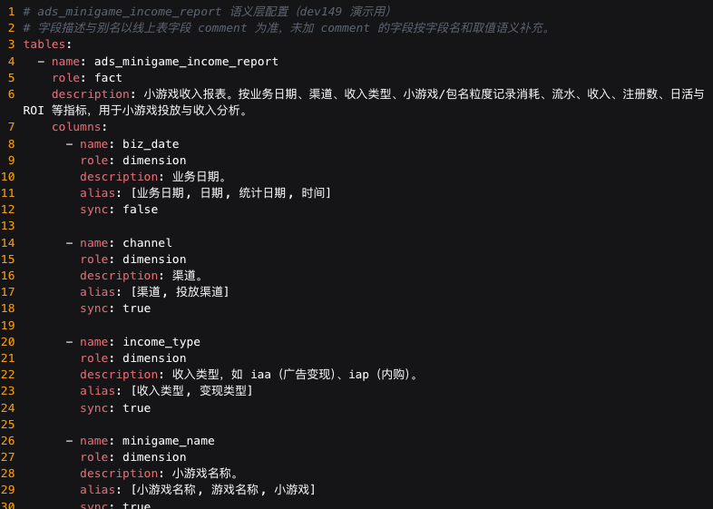
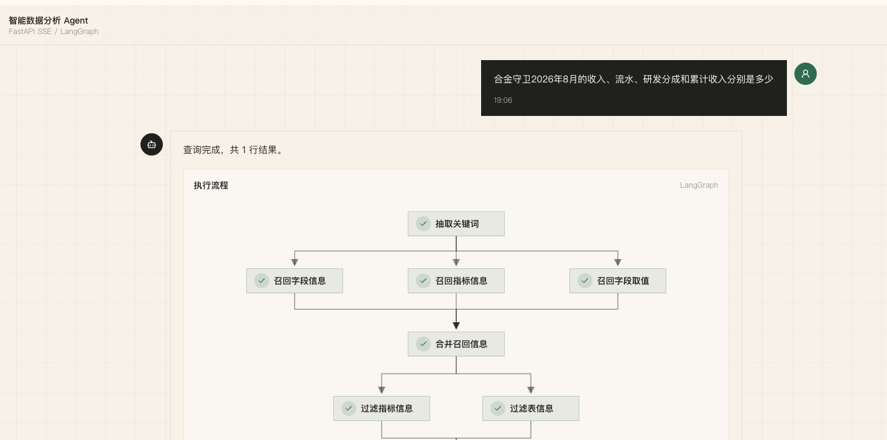
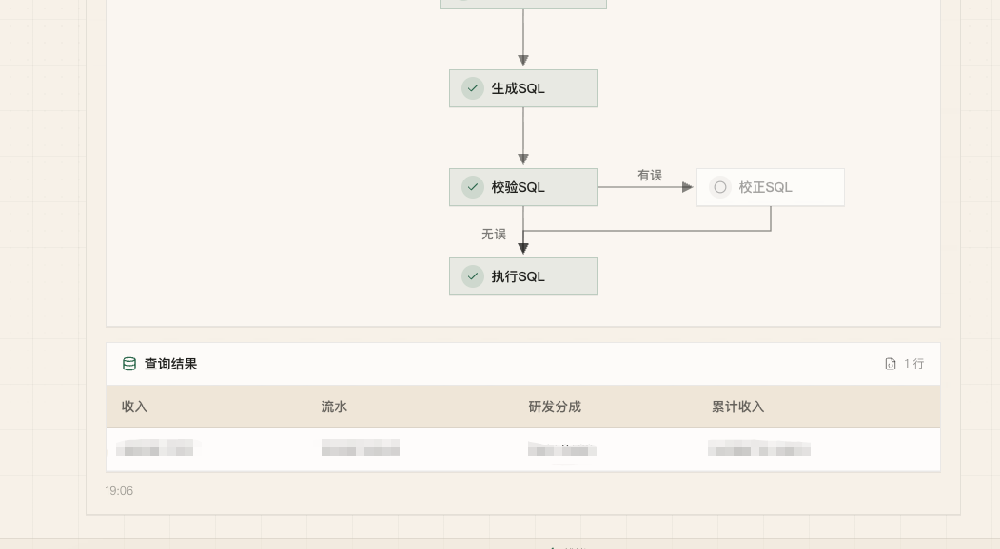

项目一 / 智能问数
智能问数：开源项目本地移植
结合业务 ADS 表，让数据分析师通过自然语言查询指标。
业务 ADS 表与字段配置

业务提问与查询结果


我做的工作
本地移植开源项目，配置 ADS 表、字段说明与别名，向数据分析师开放使用。
问数流程：问题解析 → 召回字段与指标 → 生成、校验 SQL → 执行查询
项目一 / 智能问数
结合业务 ADS 表，让数据分析师通过自然语言查询指标。



本地移植开源项目，配置 ADS 表、字段说明与别名，向数据分析师开放使用。
问数流程：问题解析 → 召回字段与指标 → 生成、校验 SQL → 执行查询